Konsolidierte Finanzaufstellungen erstellen
Important
Dynamics 365 for Finance and Operations hat sich zu speziell entwickelten Anwendungen entwickelt, mit denen Sie bestimmte Geschäftsfunktionen verwalten können. Weitere Informationen zu diesen Änderungen finden Sie im Dynamics 365-Lizenzierungshandbuch.
In diesem Thema werden die unterschiedlichen Szenarios beschreiben, in denen Sie möglicherweise konsolidierte Finanzaufstellungen generieren.
Einstufige und mehrstufige Konsolidierungen zu verschiedenen juristischen Personen
Die einfachste Methode zum Konsolidieren durch Finanzberichterstellung ist die Verwendung von Berichtsbaumstrukturen, um Daten zu Unternehmen zusammenzuführen, die denselben Kontenplan und Finanzzeitraum haben. Hier sind die allgemeinen Schritte für die Zusammenführung durch eine Berichtsbaumstruktur.
- Erstellen Sie eine Zeilendefinition und vergewissern Sie sich, dass alle entsprechenden Konten in allen Unternehmen in den Zeilen enthalten sind.
- Erstellen Sie eine Spaltendefinition, die alle Spalten umfasst, die für den Bericht, den Sie erstellen, erforderlich sind.
- Erstellen Sie eine Berichtsbaumstruktur, die einen Berichterstellungsknoten für jedes Unternehmen umfasst, das Sie auf konsolidierten Berichten verwenden.
Tip
Weitere Informationen dazu, wie Zeilendefinitionen, Spaltendefinitionen und Berichtsbaumstrukturen erstellt und verwaltet werden, finden sie unter Finanzberichtskomponenten.
Die folgende Abbildung zeigt, wie Sie eine Berichtsbaumstruktur-Definition in der Finanzberichterstellung verwenden können, um jedes Unternehmen zu identifizieren, das Sie konsolidieren.

Wie der konsolidierte Bericht in der folgenden Abbildung zeigt, können Sie jedes Unternehmen getrennt anzeigen, wenn Sie die Berichtsbaumstruktur zusammen mit einer Berichtsdefinition verwenden. Die konsolidierten Beträge werden auf der Zusammenfassungsebene angezeigt.
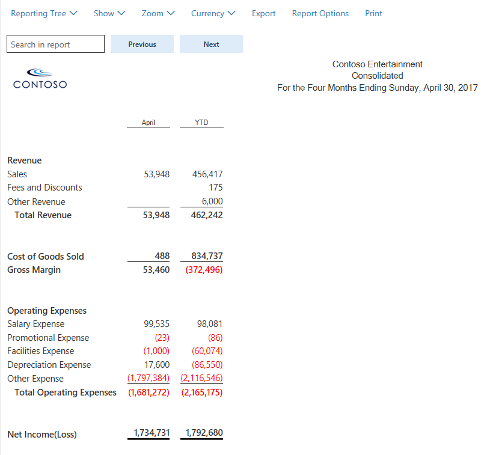
Sie können auch eine mehrstufige Berichtsbaumstruktur erstellen, die so viele Ebenen umfasst, wie Sie benötigen. Die folgende Abbildung zeigt eine mehrstufige Berichtsbaumstruktur-Definition, die Zusammenfassungen nach weltweiter Funktion aufweist.
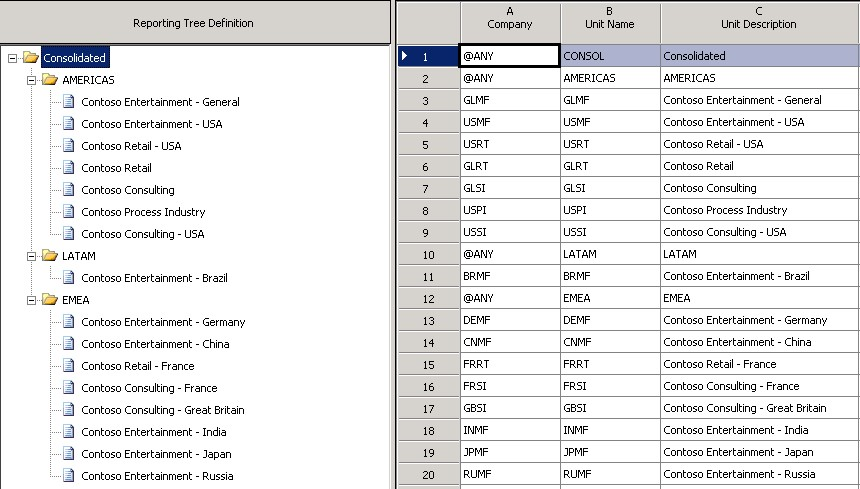
Die folgende Abbildung zeigt eine mehrstufige Berichtsbaumstruktur-Definition, die Zusammenfassungen nach Funktion aufweist.
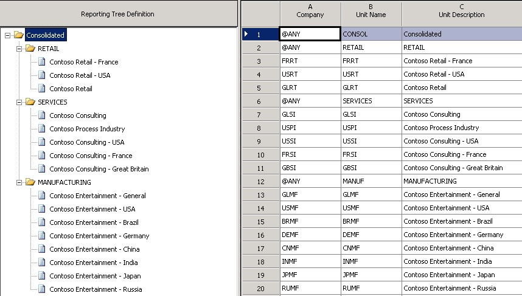
Unternehmen nebeneinander anzeigen
Zahlreiche Debitoren bevorzugen Berichte, in denen Unternehmen nebeneinander angezeigt werden, und in denen eine Spalte das konsolidierte Gesamtergebnis zeigt. Dieses Format ist einfach zu erreichen, nachdem Sie die Berichtsbaumstruktur erstellt haben. Hierbei gelten die allgemeinen Schritte, um Unternehmen in konsolidierten Finanzaufstellungen nebeneinander anzuzeigen.
- Erstellen Sie eine Spaltendefinition, die eine Spalte für Finanzdimension für jedes Unternehmen beinhaltet.
- Verwenden Sie das Feld Berichtseinheit, um die Struktur und Berichtseinheit für jede Spalte auszuwählen.
- Optional: Fügen Sie Kopfzeilen und Gesamtspalten hinzu.
Die folgende Abbildung zeigt eine Spaltendefinition im Format "Nebeneinander".

Konsolidierungen, die Organisationsstrukturen verwenden, die von den juristischen Personen erstellt werden
Organisationshierarchien, die dynamische Dimensionen oder juristische Personen enthalten, erstellen Berichtsbaumstruktur-Definitionen in der Finanzberichterstellung. Eine einfache Möglichkeit zur Optimierung von Konsolidierungen besteht darin, Ihrem Bericht in der Finanzberichterstellung eine Organisationshierarchie hinzuzufügen. Auf Grundlage das Berichtsdatums wählt die Finanzberichterstellung die Organisationshierarchie am oder vor dem zugehörigen Gültigkeitsdatum aus, wie in der folgenden Abbildung dargestellt.

Konsolidierungen die Löschungen beinhalten
Löschungsbuchungen sind ein üblicher Teil des Konsolidierungsprozesses. In diesem Beispiel werden im Zuge der Konsolidierung fünf Konten gelöscht: 142600, 211400, 401420, 401180 und 510820. Unternehmen richten ihre Intercompany-Konten möglicherweise unterschiedlich ein. Beispielsweise legen einige Unternehmen die letzte Stelle auf den Wert 9 fest, wenn das Konto in Intercompany-Transaktionen verwendet wird. Wenn Ihnen die Intercompany-Konten bekannt sind, können Sie Löschungen unabhängig von der Methode in Ihren konsolidierten Finanzaufstellungen anzeigen.
Die folgende Abbildung zeigt eine Spaltendefinition für eine konsolidierte Gewinn- und Verlustrechnung. Für jedes Unternehmen werden mit dem Dimensionsfilter drei Intercompany-Gewinn- und Verlust-Konten definiert. Spalte D umfasst nur die Löschungskonten für das USMF-Unternehmen und Spalte E schließt nur Löschungen für das DEMF-Unternehmen ein. Spalte D und Spalte E werden so eingerichtet, dass sie nicht in der Finanzaufstellung gedruckt werden.

Wenn der Bericht erstellt wird, werden die Löschungsbeträge in den Spalten F, G und H berechnet und in Spalte I addiert. Spalte J zeigt die konsolidierten Beträge. Diese Konsolidierungsbeträge schließen Löschungen für die USMF-, USRT- und DEMF-Unternehmen aus.
Tip
Erstellen Sie einen zweiten Bericht, der ausschließlich die Löschungseinträge enthält, und verwenden Sie ihn in einer Berichtsgruppe, die Ihren konsolidierten Bericht enthält. Auf diese Weise liegen Ihnen alle erforderlichen Informationen vor, um alle erforderlichen Journaleinträge zu erstellen.
Die folgende Abbildung zeigt den konsolidierten Bericht.

Ob Sie Konten, Dimensionen oder beides verwenden, mit Finanzberichten können Sie die Löschungseinträge mit den Dimensionsfilterungsfunktionen herausfiltern.
Minderheitsbeteiligung
Ein Unternehmen besitzt ggf. nur einen Anteil eines anderen Unternehmens. Wenn Sie in dieser Situation einen konsolidierten Bericht erstellen, ist es wichtig, dass Sie nur den Anteil berücksichtigen, den das Unternehmen besitzt. Finanzberichterstellung hat mehrere Möglichkeiten, die Minderheitsbeteiligung abhängig von Benutzereinstellungen darzustellen. Eine Möglichkeit ist die Verwendung eines Zusammenfassungsanteils in der Berichtsbaumstruktur-Dimension. Eine weitere Möglichkeit ist das Anzeigen des Minderheitsbesitzes als separate Position im Bericht.
Verwenden der Berichtsbaumstruktur-Definition
Geben Sie in der Berichtsbaumstruktur-Definition den Anteil der Eigentümerschaft in der Spalte Rollup % (Spalte H) ein, wie in der folgenden Abbildung dargestellt. Wenn der Bericht erstellt wird, wird dieser Anteil verwendet, um den konsolidierten Betrag zu berechnen. In diesem Beispiel besitzt Contoso nur 80 Prozent von Contoso Deutschland. Sie können entweder 80 oder .8 in der Spalte Rollup % eingeben, und es werden 80 Prozent auf der konsolidierten Ebene ausgeführt.
Note
Sie können diesen Anteil der Eigentümerschaft auf jede Berichtseinheit anwenden, nicht nur auf Unternehmensebene.

Wenn der Bericht generiert wird, zeigt der Bericht für Contoso Deutschland 100 Prozent des Verkaufsbetrags und 80 Prozent des Betrags wird der konsolidierten Ebene für Verkäufe zugewiesen und zusammengefasst.
Wenn Sie weniger als 1 Prozent eines Unternehmens besitzen, können Sie das Kontrollkästchen Rollup von weniger als 1% zulassen auf der Registerkarte Weitere Optionen der Seite Berichtseinstellungen aktivieren, wie in der folgenden Abbildung dargestellt. In diesem Fall werden die Werte in der Spalte Rollup % in der Berichtsbaumstruktur als weniger als 1 Prozent behandelt. Wenn Sie beispielsweise .8 eingeben, werden 0,8 % auf der konsolidierten Ebene ausgeführt, nicht 80 Prozent. Alternativ erreichen Sie das gleiche Ergebnis, indem Sie das Kontrollkästchen Rollup von weniger als 1% zulassen deaktiviert lassen und .008 in der Spalte Rollup % eingeben.
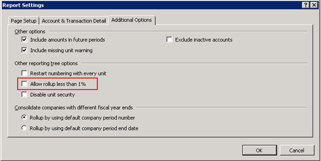
Eigentümerschaft als separate Zeile im konsolidierten Bericht anzeigen
Eine weitere Option der Minderheitsbeteiligung ist das Anzeigen von 100 Prozent der Tochtergesellschaft für jede Position im Bericht, aber die nicht-kontrollierende Beteiligung vom Nettogewinn zu subtrahieren.
Wie die folgende Abbildung zeigt, kann eine IF THEN ELSE-Anweisung und eine Spalteneinschränkung in der Zeilendefinition verwendet werden, um die Minderheitenbeteiligung auf Finanzberichten zu berechnen.
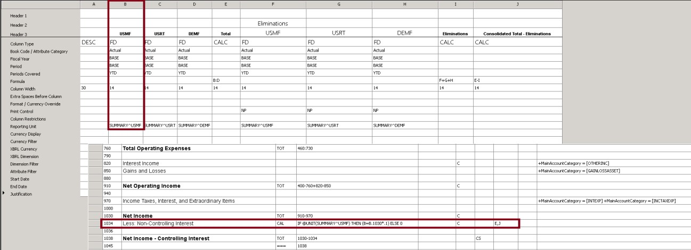
Mehrere Kontenpläne zu verschiedenen juristischen Personen
Häufig verfügen verschiedene juristische Personen über unterschiedliche Kontenpläne, möchten aber dennoch konsolidierte Finanzaufstellungen produzieren. In diesem Fall kann die Finanzberichterstellung verwendet werden, um die Daten zu konsolidieren, damit Sie konsolidierte Finanzberichte generieren können. Hier finden Sie die allgemeinen Schritte zum Konsolidieren, wenn verschiedene Kontenpläne bei juristischen Personen vorhanden sind.
- Erstellen Sie eine Zeilendefinition mit mehreren Links zu Finanzdimensionen. Es sollte ein Link für jeden Kontenplan vorhanden sein.
- Verwenden Sie die Einschränkung der Berichtseinheit in der Spaltendefinition, um jedes Unternehmen der entsprechenden Spalte zuzuweisen.
Mehrere Links zu Finanzdimensionen können jeder Zeile in der Zeilendefinition für die Kontenpläne jedes einzelnen Unternehmens hinzugefügt werden. In der folgenden Abbildung verwendet das USMF-Unternehmen den Satz der Konten in der ersten Spalte Link zu Finanzdimensionen (Spalte J) und das DEMF-Unternehmen verwendet die Konten in der zweiten Spalte Link zu Finanzdimensionen (Spalte K).
Tip
Weitere Informationen zur Zelle Link zu Finanzdimensionen finden Sie in der Zelle "Verknüpfung mit Finanzdimensionen angeben".
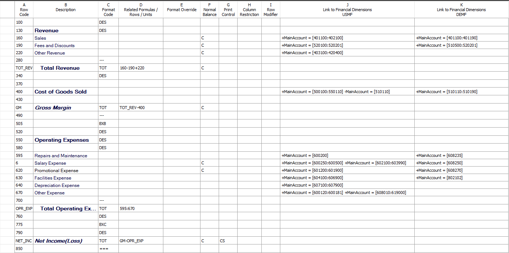
Sie können eine Berichtsbaumstruktur verwenden, um zu definieren, welcher Link zu Finanzdimensionen aus der Zeilendefinition bei jedem Unternehmen verwendet wird. Wählen Sie die Zeilendefinition in Spalte E und wählen Sie dann den entsprechenden Zeilenlink in Spalte F, wie in der folgenden Abbildung dargestellt.

Tip
Wenn Sie Links zu Finanzdimensionen erstellen, verwenden Sie die Beschreibung, um die Unternehmen zu ermitteln, für die jeder Link gilt. Auf diese Weise können Sie einfach das korrekte Unternehmen auswählen, wenn Sie eine Berichtsbaumstruktur erstellen. In der Spaltendefinition können Sie mit dem Feld Berichtseinheit jede Spalte auf eine Einheit der Berichtsbaumstruktur einschränken, um die Daten nebeneinander anzeigen zu können. Wenn Sie kein bestimmtes Unternehmen für eine Spalte angeben, werden konsolidierte Daten für alle Unternehmen angezeigt.
Verschiedene Steuerkalender zu mehreren juristischen Personen
Verschiedene juristische Personen verfügen möglicherweise über unterschiedliche Steuerkalender, müssen aber dennoch konsolidierte Finanzaufstellungen produzieren. Es gibt zwei Konsolidierungsmethoden, wenn verschiedene Finanzzeiträume bei juristischen Personen vorhanden sind:
- Erstellen Sie eine Spaltendefinition und verwenden Sie den Zeitraum und das Jahr, um die entsprechenden Zeiträume für jedes Unternehmen zuzuordnen.
- Bei Einstellungen > Sonstiges > Weitere Optionen wählen Sie aus, ob konsolidiert wird, indem Sie das Enddatum des Zeitraums oder die Zeitraumnummer verwenden.
Wenn die Spaltendefinition für mehrere Unternehmen entwerfen, die über verschiedene Finanzzeiträume verfügen, ist es wichtig, dass Sie berücksichtigen, welches Unternehmen dem Feld Unternehmensname in der Berichtsdefinition zugewiesen wird. Der Steuerkalender dieses Unternehmens wird als Basissteuerkalender für die Berichtsdefinition verwendet. Beispielsweise zeigt die folgende Tabelle die Einrichtung des Finanzzeitraums für die USMF- und INMF-Unternehmen an. Für konsolidierte Berichte möchten Sie den Steuerkalender verwenden, der von USMF verwendet wird. Die Spalte "Zuordnung" zeigt den entsprechenden Zeitraum und das Jahr für jedes Unternehmen, wenn ein Bericht für den 30. Juni 2018 generiert wird.
| Firma | Geschäftsjahr | Zuordnung |
|---|---|---|
| USMF | Geschäftsjahr, 1. Juli bis 30. Juni | Zeitraum 12, Geschäftsjahr 2018 |
| INMF | Kalenderjahr, 1. Januar bis 31. Dezember | Zeitraum 6, Geschäftsjahr 2018 |
In der folgenden Abbildung wird das USMF-Unternehmen im Feld Unternehmensname in der Berichtsdefinition angegeben. Der Steuerkalender des USMF-Unternehmens wird daher als Basissteuerkalender verwendet. In diesem Beispiel verwendet das USMF-Unternehmen, wenn ein Bericht für den 30. Juni 2018 generiert wird, den Basiszeitraum, der als Zeitraum 12 in der Berichtsdefinition definiert ist. Das INMF-Unternehmen verwendet BASE-6, das Periode 6 ist. Beide Spalten schließen Daten für den Juni 2018 ein.
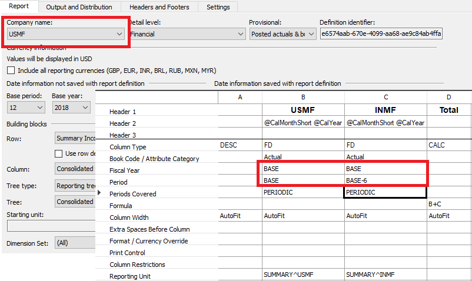
Die folgende Abbildung zeigt die Optionen in der Berichtsdefinition, mit denen Sie auswählen können, ob die Zeitraumnummer oder das Enddatum des Zeitraums für die Konsolidierung verwendet wird.
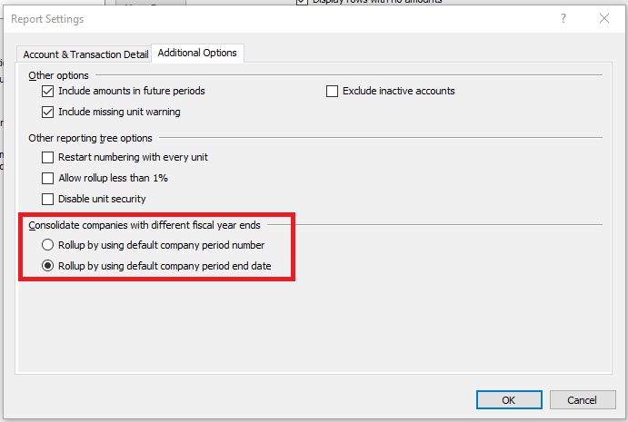
Geschäftsbereichskonsolidierungen
Dieses Thema konzentrierte sich auf die Verwendung von Berichtsbaumstruktur-Definitionen und Organisationshierarchien in Finanzberichten für Konsolidierungszwecke. Sie können auch die Berichtsbaumstruktur verwenden, um Konsolidierungsberichte für Unternehmenseinheiten, wie Berichte über weltweiten Vertrieb oder Arbeitsgänge zu erstellen. Diese Berichte sind eine allgemeine Anforderung. Um diese zu erstellen, wählen Sie ein Unternehmen und eine Dimension für jede Einheit aus, die Sie konsolidieren möchten. In der folgenden Abbildung wird beispielsweise die Zusammenfassung der Unternehmenseinheit abgewickelt, indem jedes Unternehmen in der Spalte Unternehmen (Spalte A) wiederholt und einer Gruppe mit Abteilungsdimensionswerten pro Unternehmen in der Spalte Dimensionen (Spalte D) identifiziert wird.
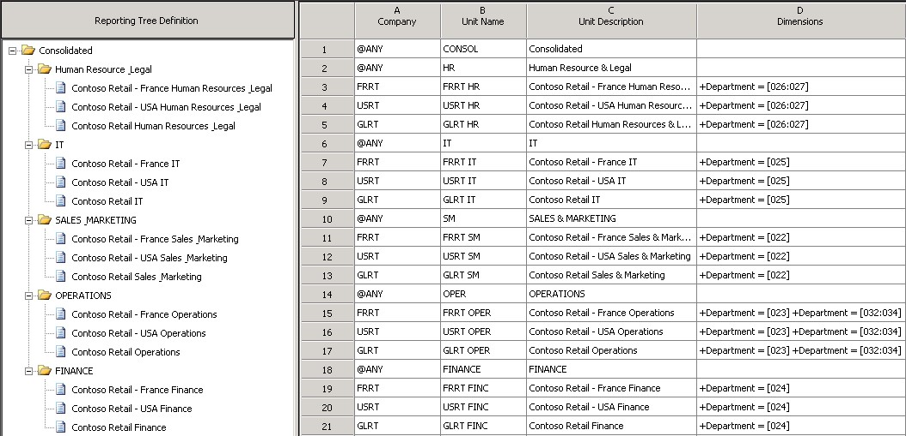
Konsolidierungen, die mehrere Berichtswährungen bedingen
Die Finanzberichterstellung bietet erweiterte Flexibilität, wenn Sie die Istkosten, das Budget, die Budgetsteuerung und die Budgetplanungsdaten in mehreren Währungen anzeigen. Indem die wichtigsten Einstellungsdaten übertragen werden, müssen Sie zu keiner Zeit für keinen Benutzer in keiner Währung eine zusätzliche Einrichtung in der Finanzberichterstellung vornehmen.
Erforderliche Komponenten
Um ordnungsgemäß umgerechnete Salden zu berechnen, erfordert die Finanzberichterstellung, dass die Kategorie Beibehaltenes Einnahme-Konto dem Konto für einbehaltene Einkünfte in der Liste Hauptkonto zugeordnet ist. Die Finanzberichterstellung unterstützt keine Buchung im Konto für einbehaltene Einkünfte. Wenn Transaktionen im Konto für einbehaltene Einkünfte gebucht werden, werden die umgerechneten Salden nicht korrekt berechnet. Es wird empfohlen, dass Benutzer ein zusätzliches Konto für beibehaltene Einnahmen einrichten, um Regulierungen am Konto für einbehaltene Einkünfte zu buchen.
Im Hauptkonto müssen die Felder Wechselkurstyp für Finanzberichterstellung und Währungsumrechnungstyp auf dem Inforegister Finanzberichterstellung für jedes Konto eingerichtet werden, wie in der folgenden Abbildung dargestellt. Sie können diese Aufgabe Konto für Konto abschließen, oder Sie können die Kontovorlagen verwenden, um Änderungen leicht abwärts zuzuordnen.
- Im Feld Wechselkurstyp für Finanzberichterstellung wählen Sie den Wechselkurstyp aus, der die Währungen und Wechselkurse enthält, die auf das Konto angewendet werden sollen. Diese Tabelle der Währungen und von Wechselkurse wird bei den tatsächlichen Daten in der Finanzberichterstellung angewendet.
- Wählen Sie im Feld Währungsumrechnungstyp die Methode aus, die zur Berechnung des Wechselkurses für die Firma verwendet wird. Diese Währungsmethode wird für Ist- und Budgetdaten in der Finanzberichterstellung verwendet.
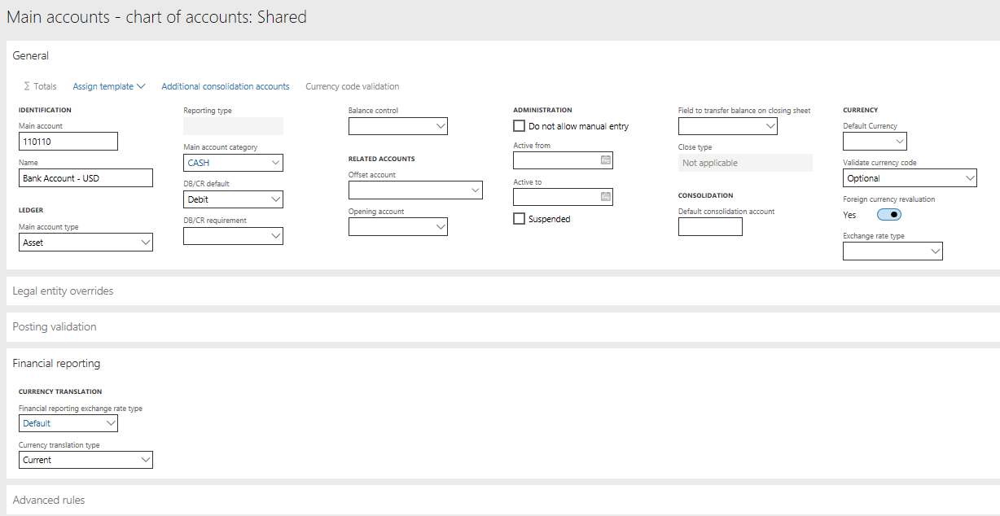
Für Budget, Budgetsteuerung und Budgetplanungsdaten wird der Wechselkurstyp auf der Seite Sachkonto definiert. Diese Tabelle wird verwendet, um die Wechselkurse zu übernehmen, und der Währungsumrechnungstyp, der dem Konto zugewiesen ist, wird verwendet.
Methoden zur Währungsumrechnung
Es gibt vier Optionen zur Berechnung der Wechselkurse in der Finanzberichterstellung:
Gewichteter Durchschnitt – Diese Methode wird am häufigsten für Gewinn- und Verlustkonten verwendet. Die folgende Formel wird verwendet:
(Wechselkurs × gültige Tage) ÷ Tage im Zeitraum
Durchschnitt – Diese Methode ist eine alternative Methode für Gewinn- und Verlustkonten. Die folgende Formel wird verwendet:
Summe der Wechselkurse ÷ Anzahl der Wechselkurse
Aktuell – Diese Methode wird am häufigsten für Bilanzkonten verwendet. Der Wechselkurs, der verwendet wird, ist der Kurs am oder vor dem Berichtsdatum oder der Spalte in der Finanzberichterstellung.
Transaktionsdatum – Diese Methode wird für Anlagenkonten verwendet. Der Wechselkurs, der verwendet wird, ist der Kurs an dem Tag, an dem die Anlage erworben wurde. Wenn ein Kurs nicht für dieses Datum eingegeben wird, wird der zuvor eingegebene Kurs verwendet, der dem Anschaffungsdatum am nächsten liegt.
Berichtsdesigneroptionen für die Währungsumrechnung
In der Finanzberichterstellung kann jeder Bericht in einer beliebigen Anzahl von Berichtswährungen angezeigt werden. Die folgenden Felder in der Berichtsdefinition unterstützen dieser Funktion:
- Der Abschnitt Währungsinformationen auf der Seite Berichtsdefinition. Dieser Abschnitt zeigt die Währung, in der die Werte angezeigt werden, wenn ein Bericht generiert wird.
- Ein neues Alle Berichtswährungen einbeziehen-Kontrollkästchen. Wenn dieses Kontrollkästchen aktiviert wird, wird ein Bericht für jede Berichtswährungen zur Berichtswarteschlange addiert, nachdem der Bericht, der die funktionale Währung des Unternehmens verwendet, generiert wird. Wenn das Kontrollkästchen deaktiviert ist, können Sie immer noch eine Berichtswährung im Web Viewer auswählen. In diesem Fall wird die Berichtswährung nur verarbeitet, wenn Sie sie auswählen.
Mit den Optionen in der Berichtsdefinition können Sie einen Bericht in alle Ihre Berichtswährungen umrechnen. Daher können Sie doppelte Berichtsdefinitionen entfernen, die sich nur in den Währungen unterschieden, die verwendet werden. Wenn Sie einen Bericht benötigen, der mehreren Währungen nebeneinander angezeigt, können das Feld Währungsanzeige auf der Seite Spaltendefinition weiter verwenden, um nur die Spalte des Berichts in eine andere Berichtswährung umzurechnen.
Anpassung der Währungsumrechnung
Die Währungsumrechnungsdifferenz (CTA) ist die Differenz zwischen den Kursen, die verwendet werden, um die Bilanzkonten und den Kurs zu berechnen, der für die Einkommensaufstellungskonten verwendet werden. Durch diese Differenz ist die Billanz nicht mehr ausgeglichen. Sie können die Finanzberichterstellung verwenden, um das CTA auf zwei verschiedene Arten zu berechnen:
Verwenden Sie die Seite Rundungsausgleiche in der Zeilendefinition, wie in der folgenden Abbildung dargestellt.
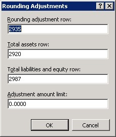
Wenn Sie die Zeile angeben, die den Rundungsausgleich (CTA) anzeigen soll, werden die Zeile "Gesamtes Anlagevermögen", die Zeile "Verbindlichkeiten und Eigenkapital insgesamt" und die Grenze angezeigt, mit denen Sie sich wohlfühlen. Die Finanzberichterstellung berechnet die Differenz und legt diese auf die gewünschte Zeile. Eine Position mit dem Namen Rundungsausgleich wird erstellt und nach Drilldown wie in der folgenden Abbildung dargestellt angezeigt.
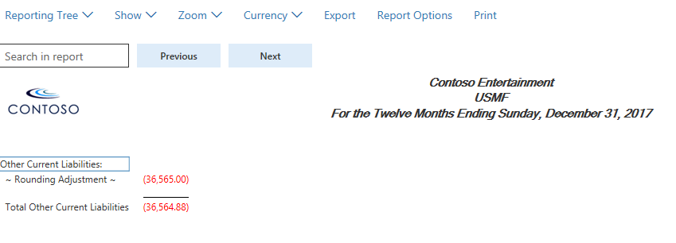
Alle Konten, von Anlagen bis Ausgaben, in einen Bereich legen. Wie in der folgenden Abbildung dargestellt gleicht der Differenzbetrag dem Rundungsausgleich (CTA). Daher können Sie diesen als Prüfsumme verwenden, um sicherzustellen, dass die Rundungsausgleichsseite keine Kontosalden enthält, die vergessen wurden.

Saldoberechnungsansatz
Um die ordnungsgemäß umgerechneten Beträge zu erhalten, wenn Währungen verwendet werden, verwendet die Finanzberichterstellung die folgenden Berechnungsmethoden für die Salden:
- Gewichteter Durchschnitt und Durchschnitt – Jeder Zeitraum wird mit den gewichteten Durchschnitt berechnet und für Spalten wie "Quartalsweise" und "Seit Jahresbeginn" summiert.
- Historisch – Jedes Konto, das die historische Umrechnungsmethode verwendet, kehrt immer zum Buchungsdatum zurück. Wenn der Transaktion ein Anschaffungsdatum zugeordnet ist, wird dieses Datum verwendet, um den Wechselkurs zu erhalten. Jeder Zeitraum wird dann summiert und gespeichert, um die Berechnungszeit zu verbessern.
- Aktuell – Berechnete und Gesamtspalten, wie Spalten für vierteljährliches und laufendes Jahr, werden mit dem Kassakurs berechnet, der in der Spalte bzw. im Bericht bestimmt wird. Beispielsweise wird die Spalte Quartal 1 den Kurs vom 31. März verwenden, wenn eines Kalenderjahrs verwendet wird.
Zusätzliche Ressourcen
Weitere Informationen zur Konsolidierung und Währungsumrechnung finden Sie im übergeordneten Thema dieses Themas, Finanzkonsolidierungen und Übersicht zur Währungsumrechnung.
Weitere Informationen zur Online-Erfassung von Konsolidierungsdetails finden Sie unter Online-Finanzkonsolidierungen.